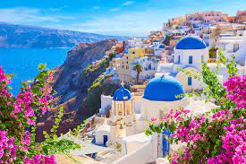

Velkommen til Santorini!
Santorini er en vakker øy i Egeerhavet kjent for sine fantastiske solnedganger, sjarmerende landsbyer og krystallklart hav.
Om Santorini
Santorini er en vulkansk øy med en rik historie. Besøk de vakre landsbyene Oia, Fira, og Kamari, utforsk antikke ruiner, og nyt deilige greske retter.
Aktiviteter på Santorini
Her er noen av de beste tingene å gjøre på øya:
- Båttur til vulkanen
- Utforsk de unike strendene
- Smak på lokal vin
- Se en solnedgang i Oia
Reisetips
Her er noen nyttige tips for ditt besøk på Santorini:
- Pakk lett og komfortabelt tøy
- Bestill overnatting i god tid
- Prøv greske spesialiteter som moussaka og souvlaki
- Husk solkrem og solbriller